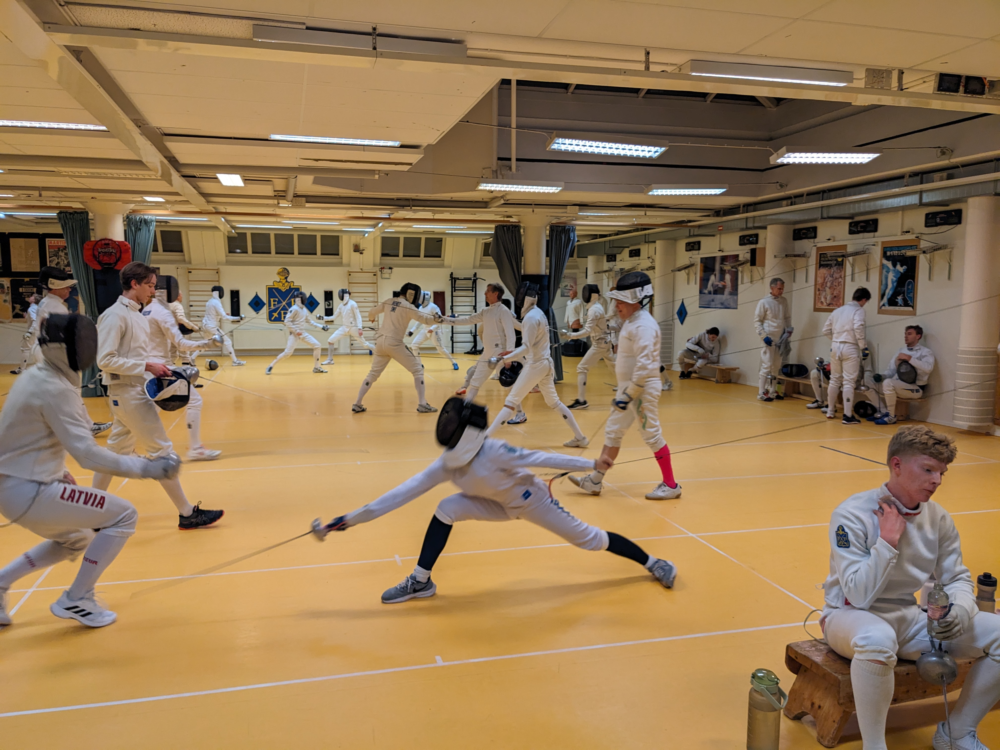
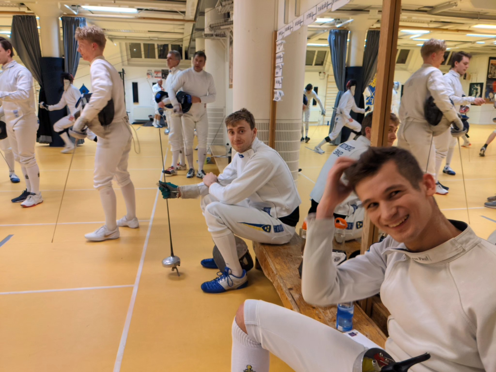
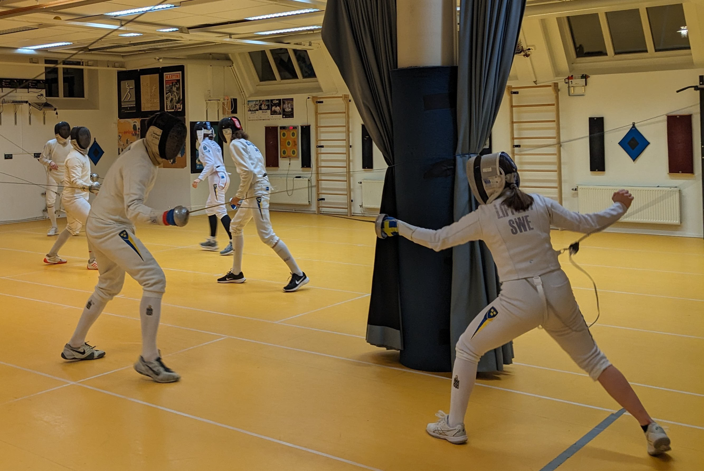
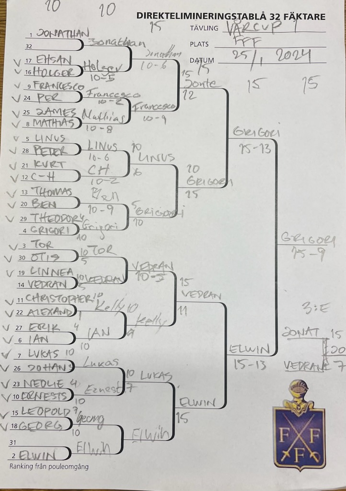

| Resultat efter den 1:a deltävlingen | ||
|---|---|---|
| Namn | Placering | Poäng |
| Grigori Beskin | 1 | 32 |
| Elwin Elg | 2 | 26 |
| Jonathan Svensson | 3 | 21 |
| Vedran Markota | 4 | 19 |
| Linus Islas Flygare | 5 | 14 |
| Lukas Marcos | 6 | 14 |
| Francesco Pelletta | 7 | 14 |
| Christopher Kelly | 8 | 14 |
| Tor Forsse | 9 | 8 |
| Ian Bäckström | 10 | 8 |
| Mathias Elmfeldt | 11 | 8 |
| Ernests Cimborevics | 12 | 8 |
| C-H Wendt | 13 | 8 |
| Holger Claesson | 14 | 8 |
| Georg Andersson | 15 | 8 |
| Benedict Chambers | 16 | 8 |
| Thomas Schiöler | 17 | 4 |
| Leopold Germer | 18 | 4 |
| Ehsan Ashrafi | 19 | 4 |
| Linnea Eriksson | 20 | 4 |
| Kurt Benkestock | 21 | 4 |
| Alexander Hallonsten | 22 | 4 |
| Neolie Lippert | 23 | 4 |
| Per Sandgren | 24 | 4 |
| James Barden | 25 | 4 |
| Johan Ström | 26 | 4 |
| Erik Stackerud | 27 | 4 |
| Peter Franzén | 28 | 4 |
| Teodor Dahlin | 29 | 4 |
| Otis Karlsson | 30 | 4 |
Rapport från första deltvävlingen
Utmaningen är större än någonsin när startskottet för Vårcupen 2024 brann av i torsdags.

“Då kan ni köra!” Med de orden från tävlingsledaren Tor släpptes kaoset löst och 30 ivriga fäktare löpte amok i jakten på ära och berömmelse. I röran kunde man skönja fäktare från när och fjärran, de med meritlistor tjocka som bibeln och de vars meritlistor just öppnats för inskriptioner.
Pouleomgången

Poule 1 med åtta fäktare, blev en jämn affär där Ian, Lukas och Ernestst vann 5 matcher var. Lika många fäktare fanns i poule 2 och även där var kampen mellan Jonathan och Tor hård om poulesegern då ingen förlorat mer än en match var. Här visade också Mathias att hans namn måste tas med i beräkningarna efter att ha försett sig med 5 segrar.
Några kliv längre bort skakade marken när Linus, Elwin och CH gjorde upp om herravläldet i den 3:e poulen. Slutligen var det dock Elwin som slank före sina medtävlare. Och längst bort opererade Grigori, med kirurgisk precision, till sig en pouleseger framför Francesco och landslagets sensationsman Christopher.
Bland alla tävlande lyste också Neolie och Linnea som frammanade både respekt och beundran hos sina medkombatanter.

Direktelimineringen
Efter poulfäktningen ställdes fäktarna upp i en ofulltändig T32:a, där Jonathan och Elwin tack vare sin poulefäktning fick stå över. I omgången därefter fick båda fullt upp med freda sig mot Holger respektive Georg, vilket de till sist lyckades med.
Francesco fick spela ut hela sitt register för att, med endast en stöts marginal, ta sig förbi den storfäktande Mathias. Linus ställdes mot fjolårsvinnaren CH och utmanövrerade denne med bestämdhet.
De båda tränarna Grigori och Ben fick mäta sina krafter i matchen bredvid. Grigoris form från pouleomgången höll i sig vilket gav honom passage till nästa runda. Vedran fick god användning av sin räckvidd och kunde med skydd av den ta sig förbi Tor. Ian satte Christopher på hårda prov som med en stöts fördel kunde pusta ut inför nästa omgång.
Även i matchen mellan Lukas och Ernestst var utgången in i det längsta osäker, men denna gång föll den ut till Lukas favör.
Kvartsfinaler
I kvartsfinalerna ökade trycket än mer. I den första matchen var det Francescos tur att pröva sin lycka mot landslagsstjärnan Jonte och gjorde bra ifrån sig men den avslutades till sist till Jonathans favör.
Vi vet alla att Grigori är svår att stoppa när han väl fått upp ångan, detta fick nu också Linus erfara. Längre kom inte heller Christopher denna kväll när Vedran, som fortfarande var lika lång som tidigare, satt stopp för vidare avancemang. Samma öde gick Lukas till mötes i sitt möte med Elwin.
Avslutningen
Nu, med pallplatser i sikte, drabbade Jonathan och Grigori samman i den första semifinalmatchen. I denna giganternas kamp stod denna kväll fru fortuna på Grigoris sida som med siffrorna 15-13 var klar till guldfinalen. Med samma siffror kunde Elwin, i den andra semin, göra det samma tack vare en seger mot Vedran.
Elwin som gjort en strålande insats försökte än en gång imponera på publiken i finalen men Grigori lät sig inte bevekas. Resolut tog Grigori istället hand om matchen och efter en stund kunde Grigori belåtet koppla ut som kvällens segrare.
I matchen om tredjeplatsen hade Jonathan hämtat sig och fick avsluta kvällen med en välförtjänt tredjeplats.

Tabellen
Nu är det dags att kasta sig över deserten, här kan ni detaljstudera tabellen efter den första deltävlingen
Vägen framåt
Med allt detta bakom oss är det hög tid att sia om framtiden. Man kan återigen konstatera att det är två kraftfält som står mot varandra de gamla mot de unga (om ni ursäktar kategorieseringen där Grigori förpassas till “de gamla”). Om Grigori inte skulle ha vunnit i torsdags skulle slagsidan till de ungas fördel vara förkrossande.
Men, vi vet sedan tidigare att det är oklokt att fatta förhastade beslut. Hur många gånger har vi inte sett tvära kast och oväntade fäktare som ritar om kartbilden? Framtiden är allt för oförutsägbar. Det enda vi med säkerhet kan veta är att kampen kommer vara, hård, intensiv och oförutsägbar. Därför måste vi alla, med full energi, återgå till hängiven träning i förhoppning om att själva, en dag få stå där i rampljuset och ta emot åhörarnas öronbdövande jubel.
Träna hårt så ses vi igen den 15:e februari!